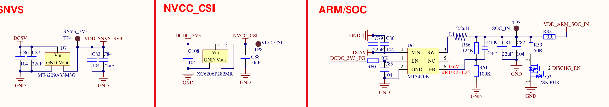

核心板第 1 页：六路电源逐个算
CORE p1 是整块核心板的「心脏页」：六个红字区块把 DC5V / DCDC_3V3 拆成 SNVS 3.3V、CSI 2.8V、ARM/SOC 1.35V、VDD_HIGH 3.3V、LVDDR3 1.35V、NVCC_SD 3.27/1.81V。这一页读完，你就知道每一路为什么是这个电压、反馈电阻怎么取值、使能与放电怎么配合。

新窗口打开读完这一章，你应该能
- 说出六路电源各自的输入、输出、电流等级与「为什么用它」
- 用 Vout=Vref(1+R1/R2) 核对每一路，并与图上的 #R1/R2 备注对上
- 算出 EN 脚 RC 的延时常数，解释上电时序为什么要错开
- 看懂 DISCHG_EN + 2SK3018 + 50R 的快速放电电路，知道它解决什么
- 解释 SD 电源为什么能在 3.27V 与 1.81V 之间切换
3.2.1六路一览：谁给谁供电
| 区块 | 芯片 | 输入 | 输出 | 为什么 |
|---|---|---|---|---|
| SNVS | U7 ME6209A33M3G | DC5V | SNVS_3V3 → VDD_SNVS_3V3 | 常电、低 Iq，RTC/唤醒不能断 |
| NVCC_CSI | U12 XC6206P282MR | DCDC_3V3 | VCC_CSI 2.8V | 摄像头模块要 2.8V（模拟/IO） |
| ARM/SOC | U6 MT3420B + L1 | DC5V | VDD_ARM_SOC_IN 1.35V | 内核大电流，必须 DCDC |
| VDD_HIGH | U8 TMI3113 + L2 | DCDC_3V3 | VDD_HIGH 3.3V | 内部高压域，独立 LDO/DCDC 隔离噪声 |
| LVDDR3 | U11 MT3420B + L3 | DC5V | DRAM_1V35 | DDR3L 1.35V，大电流、低纹波 |
| NVCC_SD | U9 TMI6050 | DCDC_3V3 | 3.27V / 1.81V 可切 | SD 3.0 高速模式要 1.8V 信号 |
注意两个「看起来重复」的地方：VDD_HIGH 是 3.3V，NVCC_CSI 是 2.8V，都从 DCDC_3V3 再降一次。为什么不用 DCDC_3V3 直供？因为 SoC 内部这些域对噪声敏感（尤其 CSI 模拟前端），单独一级 LDO 能把开关纹波再压 40–60dB。
3.2.2SNVS：唯一不能断电的一路
U7 是 ME6209A33M3G（SOT-23-3，3.3V 固定输出）。输入 DC5V，输出 SNVS_3V3，经 TP4 与 VDD_SNVS_3V3 相连。这一路的关键词是Always-On：
- 它给 SoC 的 SNVS 域（RTC、唤醒、掉电检测）供电，主电源断了也要活着；
- 所以选 LDO 而不是 DCDC：LDO 没有开关噪声、不需要电感、静态电流可做到 µA 级；
- C86 104 + C87 22µF 是输入/输出去耦（22µF 负责负载跳变，104 负责高频）。
算一下它的耗散：若 DC5V=5V、负载 30mA：P=(5−3.3)×0.03=51mW，SOT-23 温升约 13°C——完全可接受。这就是「小电流 + 低压差 → 用 LDO」的典型。
3.2.3NVCC_CSI：为什么摄像头要 2.8V
U12 是 XC6206P282MR，输出 2.8V 给 VCC_CSI（TP8）。原因：多数 CMOS 图像传感器（OV5640 等）的 AVDD 是 2.8V 模拟电源，IO 可以是 1.8/2.8/3.3V，但模拟域必须 2.8V 左右以保证动态范围。给 3.3V 会超规格、图像噪点变大；给 1.8V 则驱动不足。
C108 104 + C88 10µF：输入去耦 + 输出储能。XC6206 的 Iq 只有约 1µA，适合常开；它的压差约 0.25V@100mA，所以 3.3→2.8V（0.5V 压差）刚好够。
陷阱：若把 U12 换成 3.3V 版本（XC6206P332），摄像头的模拟域就工作在 3.3V——短期能出图，长期信噪比下降、发热增加。
3.2.4ARM/SOC 与 LVDDR3：两片 MT3420B
U6（ARM/SOC）与 U11（LVDDR3）是同一型号 MT3420B，都是「DC5V 输入、1.35V 输出、外置 2.2µH」的同步 Buck。区别只在反馈网络与电流能力：
Vout = 0.6 × (1 + Rtop/Rbottom)
U6：R56 124K / R61 100K → 0.6×(1+1.24)=1.344V；图上备注 #R1/R2=1.25，对应 0.6×2.25=1.35V。两个值差 0.5%，属于「按 E96 取整后与目标值的正常偏差」。
U11：R78 124K / R81 100K，同样 1.35V。两路分开是因为 ARM 内核与 DDR 需要独立调节/独立去耦：内核负载跳变剧烈，DDR 对纹波敏感，共用一路会互相干扰。
EN 与时序：U6 的 EN 不是直接接 3.3V，而是由 DCDC_3V3_PG 经 R60 10K 上拉、C85 104 到地。时间常数 τ=10k×0.1µF=1ms，EN 上升到阈值约 2.2τ≈2.2ms。这段延时保证「3.3V 稳定之后，才允许 1.35V 起来」——顺序错了，SoC 的 IO 会先于内核得电，产生闩锁风险。
3.2.5VDD_HIGH：TMI3113 与它的 0.6V 基准
U8（TMI3113）输入 DCDC_3V3、输出 VDD_HIGH 3.3V。反馈 R64 100K / R66 22K，图上直接标了 0.6V 与 #R1/R2=4.5：0.6×5.5=3.3V。旁边的 C89 22µF + C90 104 是输出电容组合。
为什么 3.3V 进、3.3V 出还要 DC-DC？因为 SoC 的 VDD_HIGH 需要「独立的一路」，不能和板上其他 3.3V 负载共享（否则 USB、以太网的噪声会灌进 SoC）。这一级相当于「再稳压 + 隔离」。
3.2.6NVCC_SD：唯一会「变电压」的一路
U9 是 TMI6050（注意不是常见的 TMI6030），基准 0.8V，反馈 R68 68K / R73 22K：
0.8×(1+68/22)=0.8×4.09=3.27V （图上备注 #SD1_VSELECT=0: R1/R2=3.09: 3.27V）
当 SD1_VSELECT=1 时，Q5（2SK3018）导通，把 R69 47K 并入下分压，比值降到 1.26：
0.8×(1+1.26)=1.81V （备注 #SD1_VSELECT=1: R1/R2=1.26: 1.81V）
这正是 SD 3.0 的规范要求：初始化用 3.3V，切到高速模式后信号电平降到 1.8V。同一组引脚、两种电平，靠一颗 MOS + 一个 GPIO 完成切换。R75 100K 是 Q5 栅极的下拉，保证 VSELECT 悬空时默认 3.3V（图上注明 Default:3.3V）。
3.2.7DISCHG_EN 与 50R：为什么要「主动放电」
每一路输出旁都有一组 R59/R65/R80/R74 = 50R + Q2/Q4/Q6/Q7（2SK3018），栅极由 DISCHG_EN 控制。作用：
- 快速关断：DCDC 关掉后，输出电容上的电荷不会立刻消失（负载很轻时可能维持几十毫秒）。若此时重新上电，电压不确定，SoC 可能进入异常状态。
- 保证时序干净：关机时让 1.35V 先于 3.3V 掉到 0，避免 IO 先失电、内核仍在工作的「反向供电」。
- 50R 的取值：3.3V/50Ω=66mA，1.35V/50Ω=27mA，既能在几毫秒内把 22µF 放到 0.3V 以下（τ=50Ω×22µF≈1.1ms，3τ≈3.3ms），又不会因电流过大损坏 MOS。
注意放电管接在输出与地之间，不是接在反馈脚上——接错位置会改变环路工作点，输出反而不稳。
3.2.80Ω 跳线与测试点：图纸上的「可调项」
本页的 R71 0R、R77 0R、R82 0R、R83 0R、R84 0R、R86 0R 都是可拆的短接：用于隔离某一路做电流测量、或者切换供电路径。TP3（SOC_IN）、TP4（SNVS_3V3）、TP5（DC3V3）、TP6（VCC_SD）、TP7（VCC_DDR）、TP8（VCC_CSI） 则是给万用表/示波器的探点。
调试习惯：上电第一件事量 TP4（SNVS 必须有 3.3V，否则整板不启动）；第二件事量 TP3（1.35V 内核）；第三件事量 TP7（1.35V DDR）。三个点都对，再去看时钟与复位。
3.2.9这一页最容易被画错的三处
- EN 直接接 3.3V：上电瞬间 1.35V 与 3.3V 同时起来，SoC 的 IO 先得电、内核后得电，可能闩锁。正确做法是 EN 由上一级的 PG 经 RC 延时。
- 反馈电阻接到输出电容之后：反馈必须从「负载端」而不是「电感端」取，否则走线电感会让环路不稳。
- SD 电源切换用 GPIO 直接驱动 Q5 栅极：栅极要串电阻/下拉（本板 R75 100K），否则悬空时输出可能停在中间电压，SD 卡识别失败。